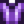

Amethyst
| Amethyst | |
| A purple variant of quartz. | |
| Information | |
| Source | |
| Sell Price | |
Amethyst is a Mineral that can be obtained from Amethyst Nodes and Gem Nodes in the Mines, panning, or as a rare drop from Green Slimes. It has a 10% chance to be dropped by a slain Dwarvish Sentry in the Volcano Dungeon. It may also occasionally be found in Fishing Treasure Chests or in a Garbage Can. A Super Cucumber Fish Pond may produce 1-3 Amethyst when the population of the pond reaches 9. The Statue Of Endless Fortune produces one Amethyst per year, on Abigail's birthday, Fall 13.
Gifting
| Villager Reactions
| |
|---|---|
| Love | |
| Like | |
| Dislike | |
Bundles
Amethyst is one of the options for the  Treasure Hunter's Bundle in the Boiler Room (Remixed).
Treasure Hunter's Bundle in the Boiler Room (Remixed).
Forging
Amethyst can be used at the Forge to increase the knockback of a melee weapon.
Recipes
Amethyst is not used in any recipes.
Tailoring
Amethyst is used in the spool of the Sewing Machine with Cloth in the feed to create a  Shirt. It is a purple dye when used in the spool of the Sewing Machine with a dyeable clothing item in the feed. It can be placed in the purple dye pot at Emily's and Haley's house for use in dyeing.
Quests
- In the "Clint's Attempt" Quest, Clint sends you a letter on the 6th of Winter requesting that you give Emily an amethyst and tell her it's from him. The reward is 1 Friendship heart with Emily.
- Amethyst may be randomly requested during any season at the "Help Wanted" board outside Pierre's General Store for a reward of
 300g and 150 Friendship points.
300g and 150 Friendship points. - 1-3 Amethyst may be requested by Catfish, Spook Fish, or Sunfish in Fish Pond quests.
- Amethyst will be requested by Emily as part of the "Rock Rejuvenation" quest at the Special Orders board outside Mayor Lewis' house.
- May be used in the Gem Birds puzzle on Ginger Island.
History
- 1.4: Can now be used in Tailoring. Can be requested in Fish Pond quests. Can be produced by Fish Ponds.
- 1.5: Can be requested in a Special Order quest. Can be used in Forging. Also used in Gem Birds puzzle.
| Minerals | |
|---|---|
| Foraged Minerals | Earth Crystal • Fire Quartz • Frozen Tear • Quartz |
| Gems | Amethyst • Aquamarine • Diamond • Emerald • Jade • Prismatic Shard • Ruby • Topaz |
| Geode Minerals | Aerinite • Alamite • Baryte • Basalt • Bixite • Calcite • Celestine • Dolomite • Esperite • Fairy Stone • Fire Opal • Fluorapatite • Geminite • Ghost Crystal • Granite • Helvite • Hematite • Jagoite • Jamborite • Jasper • Kyanite • Lemon Stone • Limestone • Lunarite • Malachite • Marble • Mudstone • Nekoite • Neptunite • Obsidian • Ocean Stone • Opal • Orpiment • Petrified Slime • Pyrite • Sandstone • Slate • Soapstone • Star Shards • Thunder Egg • Tigerseye |
| Geodes | Geode • Frozen Geode • Magma Geode • Omni Geode |